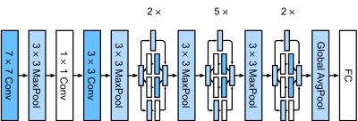
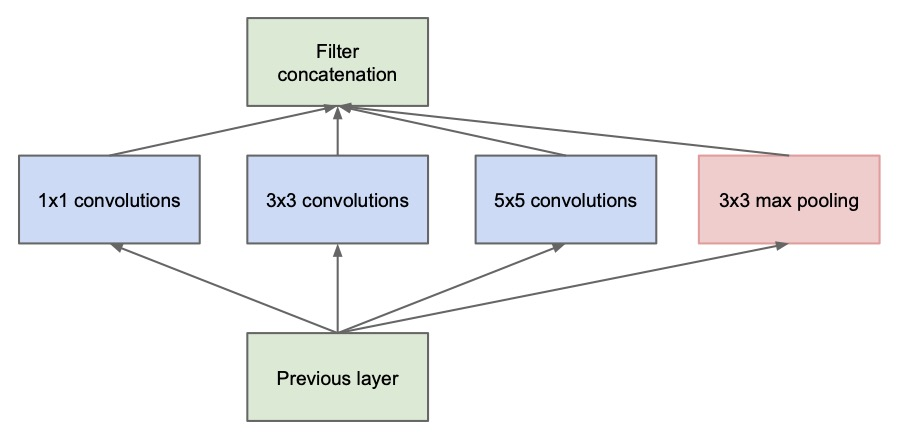
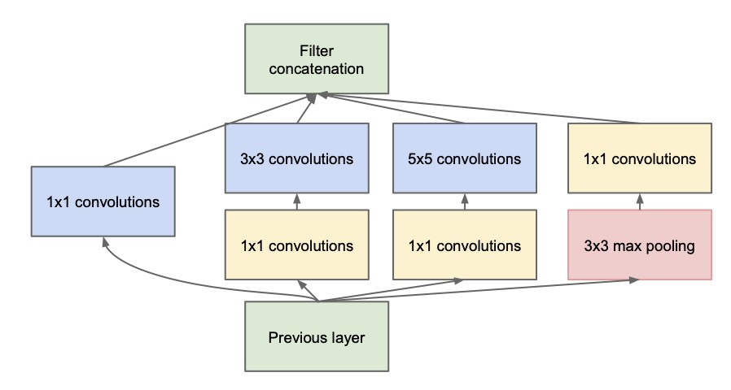

关于作者
关于作者
GoogLeNet
GoogLeNet特点
- 提出Inception模块
- 使用辅助分类器
GoogLeNet网络结构
GoogLeNet的网络结构非常深且复杂，由22个卷积层和全连接层组成，其中使用了多个Inception模块来提高网络的性能和泛化能力。 Inception模块是一个由多个卷积核和池化操作组成的网络单元，可以提高网络的非线性表达能力和感受野，从而更好地捕捉图像中的特征。
GoogLeNet网络结构如下

真的是太复杂了，但我们如果将inception结构合并到一起，就可以简化很多。

GoogLeNet在主体卷积部分中使用5个模块（block），每个模块之间使用步幅为2的3 ×3最大池化层来减小输出高宽。
- 第一模块使用一个64通道的7 × 7卷积层。
- 第二模块使用2个卷积层:首先是64通道的1 × 1卷积层，然后是将通道增大3倍的3 × 3卷积层。
- 第三模块串联2个完整的Inception块。
- 第四模块串联了5个Inception块。
- 第五模块串联了2 个Inception块。
- 第五模块的后面紧跟输出层，使用全局平均池化层来将每个通道的高和宽变成1，最后接上一个输出个数为标签类别数的全连接层。
Inception
现在可以好好的谈谈Inception模块了。 网络设计中一个重点问题是什么样大小的卷积核最合适的。 毕竟，以前流行的网络使用小到1x1，大到11x11的卷积核。 本文的一个观点是，有时使用不同大小的卷积核组合是有利的。 Inception就是把多个卷积或池化操作，放在一起组装成一个网络模块，设计神经网络时以模块为单位去组装整个网络结构。

在未使用这种方式的网络里，我们一层往往只使用一种操作，比如卷积或者池化，而且卷积操作的卷积核尺寸也是固定大小的。 但是，在实际情况下，在不同尺度的图片里，需要不同大小的卷积核，这样才能使性能最好，所以在一个Inception模块中并列提供多种卷积核的操作，网络在训练的过程中通过调节参数自己去选择使用。 同时，由于网络中都需要池化操作，此处也把池化层并列加入网络中。
但是这个结构存在很多问题，是不能够直接使用的。首要问题就是参数太多，导致特征图厚度太大。为了解决这个问题，作者在其中加入了1X1的卷积核，改进后的Inception结构如下图 
这样做有两个好处，首先是大大减少了参数量，其次，增加的1X1卷积后面也会跟着有非线性激励，这样同时也能够提升网络的表达能力。
之所以卷积核大小采用1、3和5，主要是为了方便对齐。设定卷积步长stride=1之后，只要分别设定pad=0、1、2，那么卷积之后便可以得到相同维度的特征，然后这些特征就可以直接拼接在一起了；
网络越到后面，特征越抽象，而且每个特征所涉及的感受野也更大了，因此随着层数的增加，3x3和5x5卷积的比例也要增加。但是，使用5x5的卷积核仍然会带来巨大的计算量。 为此，文章采用1x1卷积核来进行降维。
辅助分类器
为了避免梯度消失，网络额外增加了2个辅助的softmax用于向前传导梯度。这里的
mean pooling
googleNet包括最后的mean pooling替代FC层提升了0.6%的准确率，如果您对之前内容还熟悉，之前网络都是采用将最后的特征图展开为一维向量，然后链接FC层。 但本文证明用全局平均池化可以在提升准确率的同时，减少网络参数。
其他个人看法
其实GoogLenet并不是一个讨我喜的网络，因为他的很多改进其实在后来的网络中应用较少。比如说
1）网络是要加深还是加宽？ 这点在后来的实践中更多是加深网路，但是GoogleNet系列的主要思路是加宽。
2）网络设计是否该简化？ 在上节VGG我们提到他的主要优点是简单，但是googleNet的Inception过于复杂了。虽说之后的网络会更加复杂，但作为经典网络还是简单有效的好。
3）mean pooling 还是 max pooling？ 作者采用了Overlap mean pooling，这个前面AlexNet类似，kernel size=3，stride=2。 究竟用不用overlap，要mean还是max虽说没有定论，有机会好好讨论讨论
4）辅助分类器好吗？ 辅助分类器的想法是loss如果经过太多层回传，浅层不容易得到有效回传信息，因此如果采用辅助loss可以更好的训练浅层网络。 这点在后续一些其他任务的工作中也有使用，且证明有效的。但问题依旧在简洁性上。该方法总感觉算是trike，这样设计网络不够优雅， 所以后面很多网络其实并没有采用这种方式，因为影响网络的整体性。
代码实现
import torch
import torch.nn as nn
class Inception(nn.Module):
def __init__(self, input_channels, n1x1, n3x3_reduce, n3x3, n5x5_reduce, n5x5, pool_proj):
super().__init__()
#1x1conv branch
self.b1 = nn.Sequential(
nn.Conv2d(input_channels, n1x1, kernel_size=1),
nn.BatchNorm2d(n1x1),
nn.ReLU(inplace=True)
)
#1x1conv -> 3x3conv branch
self.b2 = nn.Sequential(
nn.Conv2d(input_channels, n3x3_reduce, kernel_size=1),
nn.BatchNorm2d(n3x3_reduce),
nn.ReLU(inplace=True),
nn.Conv2d(n3x3_reduce, n3x3, kernel_size=3, padding=1),
nn.BatchNorm2d(n3x3),
nn.ReLU(inplace=True)
)
#1x1conv -> 5x5conv branch
#we use 2 3x3 conv filters stacked instead
#of 1 5x5 filters to obtain the same receptive
#field with fewer parameters
self.b3 = nn.Sequential(
nn.Conv2d(input_channels, n5x5_reduce, kernel_size=1),
nn.BatchNorm2d(n5x5_reduce),
nn.ReLU(inplace=True),
nn.Conv2d(n5x5_reduce, n5x5, kernel_size=3, padding=1),
nn.BatchNorm2d(n5x5, n5x5),
nn.ReLU(inplace=True),
nn.Conv2d(n5x5, n5x5, kernel_size=3, padding=1),
nn.BatchNorm2d(n5x5),
nn.ReLU(inplace=True)
)
#3x3pooling -> 1x1conv
#same conv
self.b4 = nn.Sequential(
nn.MaxPool2d(3, stride=1, padding=1),
nn.Conv2d(input_channels, pool_proj, kernel_size=1),
nn.BatchNorm2d(pool_proj),
nn.ReLU(inplace=True)
)
def forward(self, x):
return torch.cat([self.b1(x), self.b2(x), self.b3(x), self.b4(x)], dim=1)
class GoogleNet(nn.Module):
def __init__(self, num_class=100):
super().__init__()
self.prelayer = nn.Sequential(
nn.Conv2d(3, 64, kernel_size=3, padding=1, bias=False),
nn.BatchNorm2d(64),
nn.ReLU(inplace=True),
nn.Conv2d(64, 64, kernel_size=3, padding=1, bias=False),
nn.BatchNorm2d(64),
nn.ReLU(inplace=True),
nn.Conv2d(64, 192, kernel_size=3, padding=1, bias=False),
nn.BatchNorm2d(192),
nn.ReLU(inplace=True),
)
#although we only use 1 conv layer as prelayer,
#we still use name a3, b3.......
self.a3 = Inception(192, 64, 96, 128, 16, 32, 32)
self.b3 = Inception(256, 128, 128, 192, 32, 96, 64)
##"""In general, an Inception network is a network consisting of
##modules of the above type stacked upon each other, with occasional
##max-pooling layers with stride 2 to halve the resolution of the
##grid"""
self.maxpool = nn.MaxPool2d(3, stride=2, padding=1)
self.a4 = Inception(480, 192, 96, 208, 16, 48, 64)
self.b4 = Inception(512, 160, 112, 224, 24, 64, 64)
self.c4 = Inception(512, 128, 128, 256, 24, 64, 64)
self.d4 = Inception(512, 112, 144, 288, 32, 64, 64)
self.e4 = Inception(528, 256, 160, 320, 32, 128, 128)
self.a5 = Inception(832, 256, 160, 320, 32, 128, 128)
self.b5 = Inception(832, 384, 192, 384, 48, 128, 128)
#input feature size: 8*8*1024
self.avgpool = nn.AdaptiveAvgPool2d((1, 1))
self.dropout = nn.Dropout2d(p=0.4)
self.linear = nn.Linear(1024, num_class)
def forward(self, x):
x = self.prelayer(x)
x = self.maxpool(x)
x = self.a3(x)
x = self.b3(x)
x = self.maxpool(x)
x = self.a4(x)
x = self.b4(x)
x = self.c4(x)
x = self.d4(x)
x = self.e4(x)
x = self.maxpool(x)
x = self.a5(x)
x = self.b5(x)
#"""It was found that a move from fully connected layers to
#average pooling improved the top-1 accuracy by about 0.6%,
#however the use of dropout remained essential even after
#removing the fully connected layers."""
x = self.avgpool(x)
x = self.dropout(x)
x = x.view(x.size()[0], -1)
x = self.linear(x)
return x